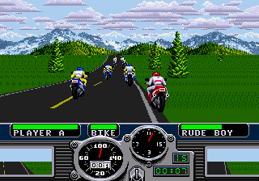

ELECTRONIC ARTS · SEGA MEGA DRIVE
标题画面按开始，选赛道后再按两次开始出发。
暴力摩托
1991 原版 · 像素公路 · 竞速与打斗
首次约 3 MB · 手机建议横屏标题画面按开始，选赛道后再按两次开始出发。
已暂停
标题画面按开始 → 左右选赛道 → 再按两次开始
↑←→↓
左右转向 · 靠近对手再攻击 · 油门锁定后可专心转向与打斗

1991 原版 · 像素公路 · 竞速与打斗
首次约 3 MB · 手机建议横屏